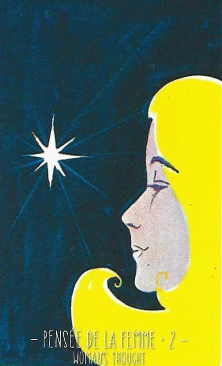

2
여자의 생각
Woman's thought중립

그림 읽기
어두운 배경에 밝은 금발의 여성. 아래를 향한 시선은 깊은 내면과 감정을, 크고 밝은 별은 내적 통찰과 영감을 상징합니다.
여성여성적 에너지여성의 생각활동성 떨어짐여성의 영향
핵심 내용
- 내담자의 운명에 영향을 미치는 여자
- 내담자가 남자일 경우 : 내 주변의 여자, 지금 생각하는 상대 여자
- 내담자가 본인일 경우 : 자신의 생각이 가장 중요할 때
- 질문 내용에 여자의 영향력이 클 때 반영됨
- 머지않은 시기에 연락이 온다 — 얼마 남지 않은 시점
- 여성적이며 전체적으로 활동성이 줄어듦
주요 메시지
내면의 깊이 — 감정·욕구·직관을 더 깊이 이해하고자 할 때
여성적 에너지와 감성 — 감성·직관·수용성. 여성 중심 조직이나 여성이 주도하는 상황
실생활 적용
감정의 이해와 표현 — 감정을 들여다보고 표현하는 방법을 배울 필요
내면의 목소리에 집중 — 중요한 결정·창의적 문제 해결에는 안을 듣는 것이 관건
학습 노트
복잡한 감정이나 미묘한 인간관계에서 자신의 직관을 믿고 행동하라는 조언.
조합 메모

6번(보상)+2번 = 소망의 현실화